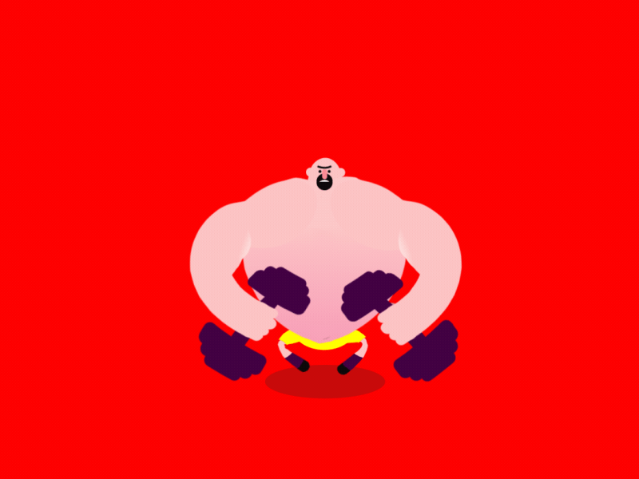

Hack Your Career
 Hack.your.Career
Hack.your.Career


UI Development - Web Dev. part 4/4
Ogłoszenia parafialne
- Owoce i soki
- Smycze SAP Hybris
- Ankieta
- Kod źródłowy aplikacji
- Wykłady częściowo w jęz. angielskim
- Nagrody dla najbardziej aktywnych!
Agenda
Co zyskacie dzięki dzisiejszemu wykładowi?
- podstawy języka CSS oraz preprocesorów CSS
- praktyczną wiedzę dotyczącą realnego wdrażania projektów i tworzenia interfejsów użytkownika
- inspirację i motywację do dalszej nauki
Aplikacja ProGamer - briefing
CSS - intro
No właśnie,
co to takiego CSS?

Składnia CSS
<div class="tower-of-pisa"></div>
.tower-of-pisa {
font-style: italic;
}

Sass - intro
Dlaczego Sass?

Sass - CSS na sterydach
Sass - CSS na sterydach
.tower-of-pisa {
font-style: italic;
}
.italy-monuments {
.tower-of-pisa {
font-style: italic;
}
}
$tower-color: white;
.italy-monuments {
.tower-of-pisa {
font-style: italic;
color: $tower-color;
}
}
$tower-color: white;
@mixin leaning-tower() {
font-style: italic;
color: $tower-color;
}
.italy-monuments {
.tower-of-pisa {
@include leaning-tower();
}
}
Atomic design
Live coding!
Resources
- do pokodzenia: Code Pen
- do obejrzenia: CSS Tricks
- do poczytania: Kurs CSS - webkod.pl
- dokumentacja: W3Schools CSS
- atomic design Pattern Lab
- dokumentacja: SASS